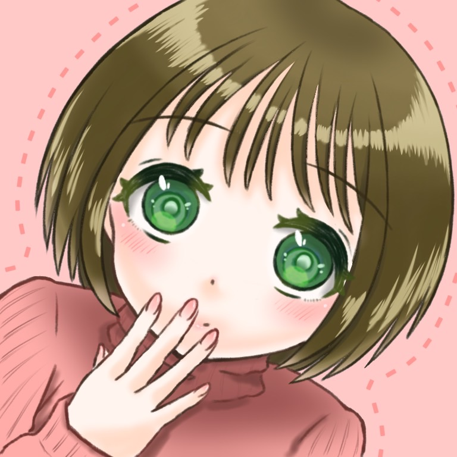

About



鈴木瑠佳（すずきるか）
京都芸術大学（旧：京都造形芸術大学）芸術学部情報デザイン学科イラストレーションコース第二学年に在籍中。 趣味はゲーム、アニメ鑑賞、レース編みやセルフネイルなど家の中でできること全般。特技はアニメキャラの声を聞いて声優を当てること。
Works
現役女子芸大生のリアルな日常
制作時期：2021年10月ごろ
授業課題でフルHDサイズのイラスト制作を行いました。
リーグ戦配信用素材
制作時期：2022年8〜9月ごろ（1つあたり1週間程度）
Shadowverseというゲームのアマチュアリーグ戦の配信に使う用の素材として制作しました。ゲーム内にある『称号』をイメージして制作しました。